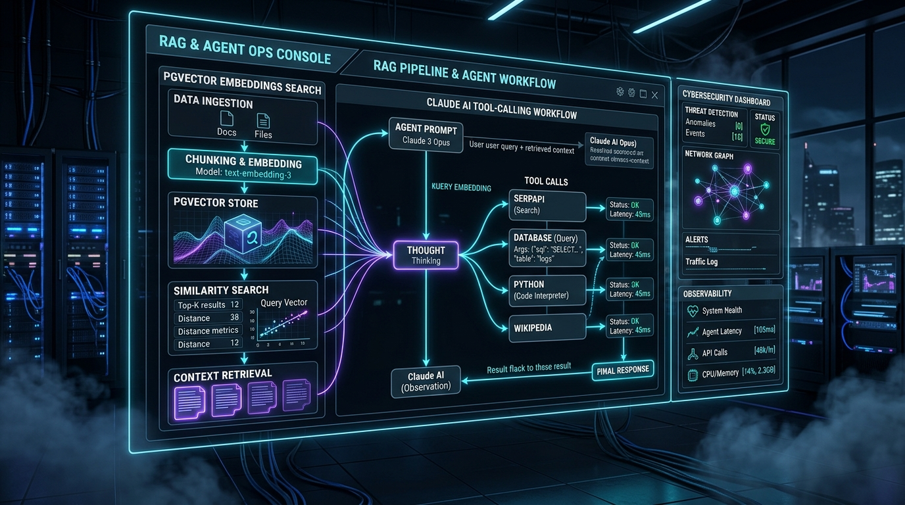

2026 • Flagship Project
OpsPilot – AI Support & Triage Agent Platform
Autonomous Incident Triage & Hybrid Vector Knowledge Engine
- Built a RAG assistant over product documentation using hybrid retrieval (pgvector similarity + Postgres full-text, merged via Reciprocal Rank Fusion).
- Serves streamed answers with inline citations and a deterministic "I don't know" fallback on low-confidence retrieval.
- Developed a tool-calling triage agent on the Claude API that classifies tickets, drafts replies, and opens GitHub issues with human-approval gates.
- Exposed search and ticketing tools through an MCP server and embedded services in a Slack bot (Bolt) with feedback capture.
- Added request tracing (latency, token cost, tool calls), automated LLM-as-judge eval suite in CI, and prompt-injection defenses.
Python
FastAPI
PostgreSQL + pgvector
Redis
Claude API
MCP
Slack Bolt
Next.js
Docker